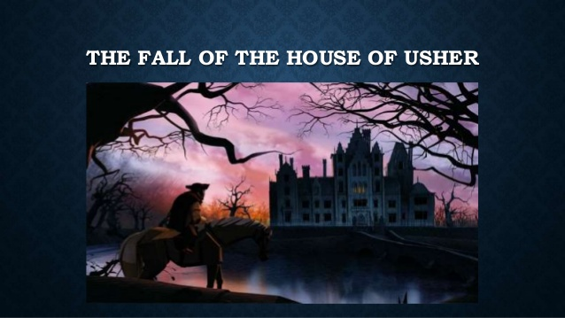
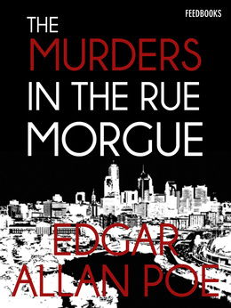
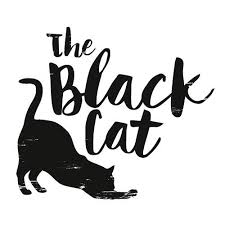
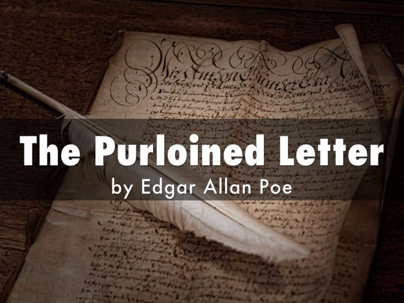
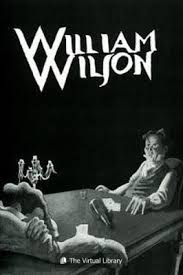
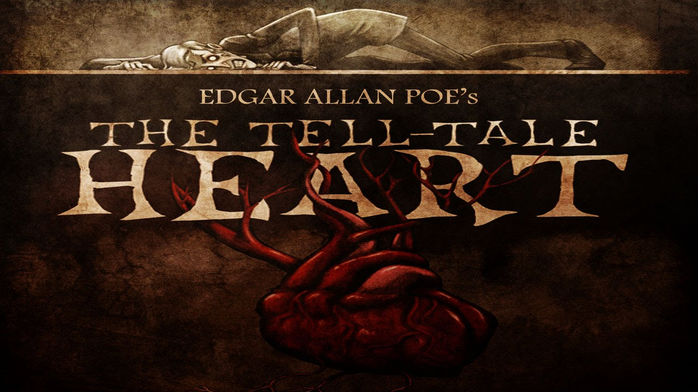
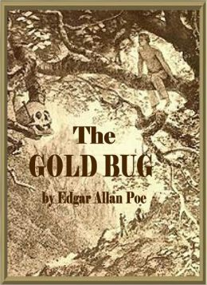
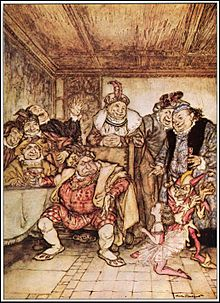
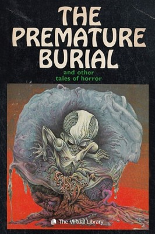
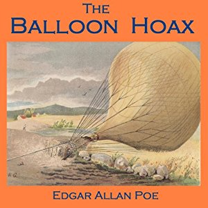

Another story which, like ‘The Tell-Tale Heart’, might be called a Gothic novel in miniature, ‘The Fall of the House of Usher‘ is regularly named one of Poe’s best stories. The story combines the Gothic house, the old aristocratic family on its last legs, the idea of the dead returning to life, and various other hallmarks of classic Gothic fiction. Go and have your spine chilled with this classic tale.
One of the first modern detective stories, this – and ‘The Purloined Letter’ – clearly influenced Conan Doyle in his creation of Sherlock Holmes (who, in the first novel in which he appears, refers to Poe’s fictional detective, C. Auguste Dupin, as a ‘very inferior fellow’). We won’t offer spoilers here as to the story’s surprising resolution, but suffice to say that ‘The Murders in the Rue Morgue‘ went a long way towards creating the locked-room mystery genre of detective stories. Although it’s often called the first detective story, there are a number of other candidates for this honour, as we revealed in our short history of detective fiction.
A terrifying tale narrated by a man who drunkenly maims his pet black cat by gauging out one of its eyes (!). If that isn’t horrific enough, the narrator, a violent alcoholic, then hangs the cat from a tree in his garden. Thereafter, he will be ‘haunted’ by the cat – and his life is about the get much, much worse. Like ‘The Tell-Tale Heart’, this is a story about guilt and remorse, and an interesting and ambiguous take on the ghost story. Enjoy it (if you can) here.
This is one of the first ever detective stories and, like ‘The Murders in the Rue Morgue’, features the literary inspiration for Sherlock Holmes, C. Auguste Dupin. This story centres on an indiscreet love letter, which has been stolen in order to be used for blackmailing purposes. It is a theme that countless later writers of detective fiction, notably Conan Doyle, would utilise and adapt. The police cannot find the letter in the blackmailer’s apartment, although they know it must be there somewhere – so Dupin, the independent detective, is consulted. He manages to see what the police failed to see – but to say more than that would be to reveal too much, so go in search of the missing letter here.
A fine tale of the double whose influence can be seen everywhere from Dr Jekyll and Mr Hyde to Fight Club, ‘William Wilson’ is narrated by a man whose mysterious double – also called William Wilson – appears at the moments in his life when the narrator behaves in a less than moral way (cheating at cards, for instance). The final scene of the story surely influenced Oscar Wilde’s ending to The Picture of Dorian Gray. Prepare for double trouble by reading the story here. We’ve analysed ‘William Wilson’ here.
A story centring on the aftermath of a murder, ‘The Tell-Tale Heart‘ is a short Gothic classic which contains echoes of Macbeth and would go on to influence later writers, notably Robert Louis Stevenson in his story ‘Markheim’. It is one of Poe’s shortest classic short stories, and is noteworthy for providing a different, altogether more modern take on the ghost story, because there is some uncertainty as to whether we are in the realm of hallucination or the supernatural. For our money, it’s one of Poe’s most perfect stories – though its ‘story’ is remarkably straightforward, and it’s more about psychological effects than it is about plot.
This is, in many ways, the first code-breaking story. As we’ve outlined elsewhere, Poe was a keen cryptographer who invited readers of Alexander’s Weekly to submit puzzles and cryptograms for him to solve. He solved every one. This story centres on a search for buried treasure, with the deciphering of a code providing the key to the treasure’s whereabouts. This was arguably Poe’s most successful tale during his lifetime and, according to the author himself, sold more than 300,000 copies within its first couple of years. Start deciphering the tale here.
Originally bearing the subtitle ‘The Eight Chained Ourangoutangs’, this story is a revenge tale. A dwarf who is serving as a tyrannical king’s jester swears revenge on the king and his court after the king strikes the dwarf’s companion, the female dwarf Trippetta. The revenge entails the dwarf disguising the king and his courtiers as orangutans (hence the story’s subtitle) and … well, to say more than this would be to offer spoilers, so we’ll just link to the story here.
The name for a fear of being buried alive is taphephobia, and Poe wrote perhaps thedefinitive story about this fear, a fear which also turns up in ‘The Fall of the House of Usher’. Prepare to be buried in the story here.
Published in 1844 and originally presented as a true story in The Sun newspaper in New York, ‘The Balloon-Hoax‘ tells of a European man’s journey across the Atlantic in a hot-air balloon. The journey supposedly took him only three days – which would have been a remarkable feat, if true. It wasn’t. The hoax was exposed, and the newspaper retracted the story.
